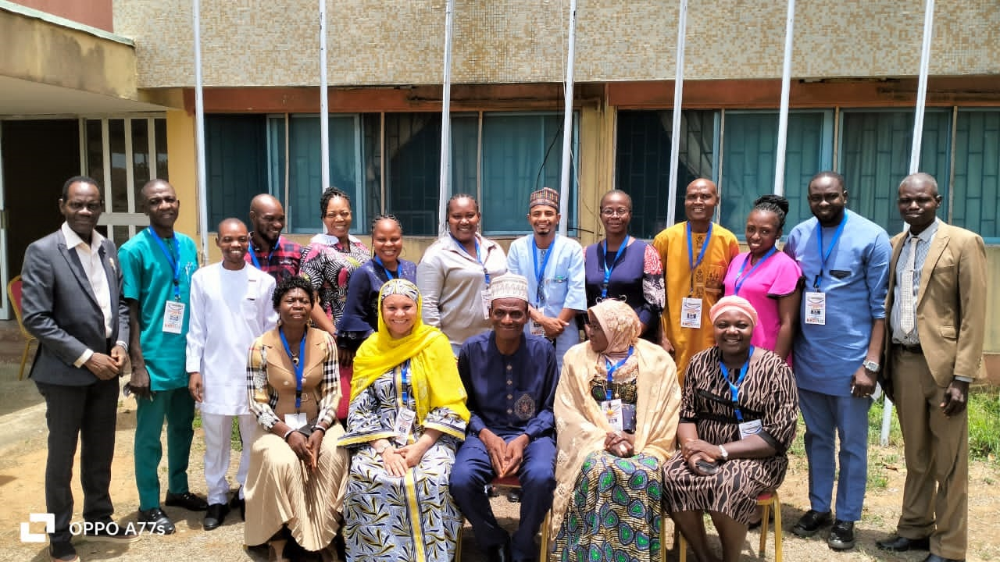

-
Welcome To WAMDEVIN"DONT JUST TRAIN. TRANSFORM. DONT JUST LEARN.LEAD"Enhancing public sector excellence through training, research, consultancy, and regional collaboration across West Africa.READ MORECONTACT US
-

Welcome To WAMDEVINEMPOWERING PUBLIC SECTOR FOR BETTER PERFORMANCEEnhancing public sector excellence through training, research, consultancy, and regional collaboration across West Africa.READ MORECONTACT US
Our Core Services
Transforming West African Management Excellence
Discover the comprehensive services WAMDEVIN offers to drive institutional excellence and regional development
Training Excellence
Capacity-building workshops, leadership development, and institutional strengthening across West Africa.
Explore TrainingResearch & Innovation
Regional research initiatives, policy studies, and management innovation projects driving evidence-based development.
View ResearchConsultancy Services
Professional advisory services for institutional transformation, organizational excellence, and strategic development.
Get ConsultancyPublications
Journal articles, reports, newsletters, and knowledge-sharing resources across West African management development institutes.
Browse PublicationsOur Heritage
Historical Antecedents
From our establishment in 1987 under the Commonwealth Secretariat to becoming West Africa's premier management development network, our journey reflects nearly four decades of excellence and regional impact.
Foundation & Establishment
WAMDEVIN formally established under the Commonwealth Secretariat to promote management development excellence through regional collaboration and institutional networking.
Early Growth Phase
Membership expands across multiple West African nations, establishing collaborative frameworks and launching pioneering training programs for public sector leaders.
Regional Expansion
Network grows to encompass 8+ West African countries with 30+ member institutions, business schools, and specialized training centers.
Digital Transformation
Embracing technology-driven learning platforms, online training modules, and virtual collaboration tools to expand regional reach and impact.
Ongoing Excellence
Serving 5,000+ trained professionals across 45+ member institutions with cutting-edge management development programs driving regional transformation.
Who We Are
A Network of Management Excellence
WAMDEVIN stands as West Africa's premier collaborative network of management development institutions, training centers, and business schools—united in our commitment to strengthening regional human capital and advancing public sector excellence through innovation and partnership.
38+
Years of Impact
45+
Member Institutions
8+
Countries
5K+
Professionals Trained
Our Mission
To strengthen regional human resources development and advance public sector excellence through collaborative management development and capacity building.
Our Vision
A world-class network of management development institutions driving transformational leadership and sustainable development across West Africa.
Join Our Legacy of Excellence
Discover how WAMDEVIN can support your institution's growth and regional impact
Excellence & Impact
WAMDEVIN's Legacy of Regional Excellence
Three decades of transforming management excellence across West Africa through strategic partnerships, innovative programs, and institutional capacity building
38+
Years of Excellence
Established 1987 under Commonwealth Secretariat
8+
Member Countries
Spanning West African region
5000+
Professionals Trained
Elite management practitioners globally
45+
Member Institutions
Leading academic & training organizations
Strategic Pillars of Excellence
Knowledge Creation
Cutting-edge research and policy analysis driving evidence-based management development across the region
Strategic Networking
Fostering institutional collaboration and partnerships for sustainable regional development and capacity sharing
Leadership Excellence
Developing transformational leaders equipped to drive organizational excellence and public sector innovation
Join the Network of Excellence
Our Transformational Platform
Capacity Building & Leadership Development
WAMDEVIN's upcoming initiatives are designed to strengthen human capital development and advance public sector excellence across West Africa. Through strategic retreats, intensive training programmes, and collaborative learning platforms, we nurture transformational leadership that drives sustainable development in our region.
TRAINING PROGRAMMES OF WAMDEVIN FOR 2026
Comprehensive Capacity Building Schedule
| S/N | COURSE TITLE | DATE | VENUE | TARGET AUDIENCE |
|---|---|---|---|---|
| 1. | Work-life Balance and Organisational Commitment | 25-26 Feb, 2026 | ASCON, Badagry | Administrative, Finance, Executive and Faculty Staff |
| 2. | Application of Modern ICT Tools for Training Delivery and Evaluation | 12-13 Mar, 2026 | Online & Badagry | Faculty & Non-Faculty Staff of MDIs |
| 3. | Grant Writing Workshop | 25-26 Mar, 2026 | Online & Badagry | Staff of MDIs in West Africa |
| 4. | Advanced Mentorship Training | 16-17 Apr, 2026 | Online & Badagry | Staff of MDIs in West Africa |
| 5. | E-Learning Platforms for L&D Practitioners (Intermediate) | 28-29 May, 2026 | Online | Staff of MDIs in West Africa |
| 6. | Train-The-Trainers' (Blended) | 9-27 Jun, 2026 | Online & Badagry | Faculty Staff of MDIs in West Africa |
| 7. | New Approach to Curriculum Development in Learning and Development | 9-10 Jul, 2026 | Ghana | Staff of MDIs in West Africa |
| 8. | Case Writing Workshop for MDIs Staff | 20-21 Aug, 2026 | Nigeria | Faculty Staff of MDIS in West Africa |
| 9. | Mainstreaming Gender into Training Programmes of MDIs | 9-10 Sep, 2026 | Nigeria | Faculty & Non-Faculty Staff of MDIs |
| 10. | Enhancing Management Consultancy Skills for Faculty Staff of MDIs | 24-25 Sep, 2026 | Online | Faculty Staff of MDIs in West Africa |
| 11. | Fundamentals of Research Methodology for L&D Practitioners | 15-16 Oct, 2026 | Online & Badagry | Faculty Staff of MDIs in West Africa |
| 12. | EXCO Meeting and Workshop on Enhancing Revenue Generation Skills for MDIs | 25-27 Nov, 2026 | The Gambia | EXCO Members |
| 13. | Administrative Principles, Practices, and Processes | 17-18 Dec, 2026 | Badagry | Administrative, Finance, Executive and Faculty Staff |
13 Comprehensive Training Programmes designed to enhance capacity building across West African MDIs
Register for TrainingWhy Participate in WAMDEVIN Initiatives?
These transformational programmes are meticulously designed to strengthen human capital development, advance public sector excellence, and nurture transformational leaders who will drive sustainable development across West Africa. By joining our initiatives, you become part of a regional network committed to excellence, innovation, and collaborative progress.